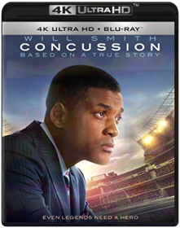
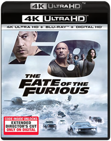
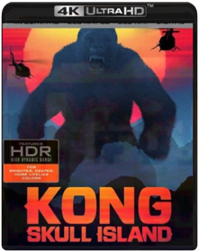
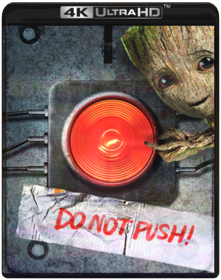
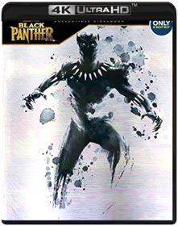
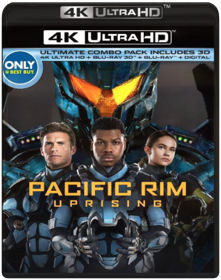
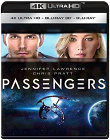
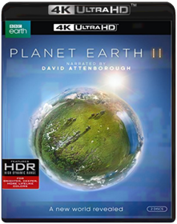

Alien: Covenant The Angry Birds Movie  Arrival  Baby Driver Edgar WrightBaby (ANSEL ELGORT) – a talented, young getaway driver – relies on the beat of his personal soundtrack to be the best in the game. When he meets the girl of his dreams (LILY JAMES), Baby sees a chance to ditch his criminal life and make a clean getaway. But after being coerced into working for a crime boss (KEVIN SPACEY), he must face the music when a doomed heist threatens his life, love and freedom.Blade Runner 2049 Denis VilleneuveThirty years after the events of the first film, a new blade runner, LAPD Officer K (Ryan Gosling), unearths a long-buried secret that has the potential to plunge what's left of society into chaos. K's discovery leads him on a quest to find Rick Deckard (Harrison Ford), a former LAPD blade runner who has been missing for decades. The hunt for the truth begins in this follow-up to one of the most visually spectacular films in cinematic history.Jason Bourne  Cabin in the Woods Drew GoddardNow available for the first time on 4K Ultra HD! A rambunctious group of college friends steals away for a weekend in an isolated country cabin only to be attacked by horrific supernatural creatures.Cars 3 Brian FeeFrom Disney-Pixar, creators of FINDING DORY and Academy Award(R)winner INSIDE OUT (Best Animated Feature Film, 2015), comes an epic adventure packed with heart, hilarity and full-throttle FUN! Blindsided by a new generation of blazing-fast racers led by arrogant hotshot Jackson Storm, the legendary Lightning McQueen (Owen Wilson) is suddenly sidelined and pushed from the sport he loves. To get back on track, he'll need the help of eager young racing technician Cruz Ramirez, inspiration from the late Fabulous Hudson Hornet and a few unexpected twists and turns of fate. Bring home the high-octane hit that's fully loaded with unforgettable characters and spectacular animation!Coco Lee Unkrich and Adrian MolinaIn Disney/Pixar's vibrant tale of family, fun and adventure, an aspiring young musician named Miguel (voice of newcomer Anthony Gonzalez) embarks on an extraordinary journey to the magical land of his ancestors. There, the charming trickster Héctor (voice of Gael Garci a Bernal) becomes an unexpected friend who helps Miguel uncover the mysteries behind his family s stories and traditions.Concussion  Peter LandesmanWill Smith stars in Concussion, a dramatic thriller based on the incredible true David vs. Goliath story of American immigrant Dr. Bennet Omalu, the brilliant forensic neuropathologist who made the first discovery of CTE, a football-related brain trauma, in a pro player and fought for the truth to be known. Omalu’s emotional quest puts him at dangerous odds with one of the most powerful – and beloved – institutions in the world. With captivating performances by Alec Baldwin and Academy Award® nominee Albert Brooks (1987 Best Supporting Actor, Broadcast News).Batman v Superman: Dawn of Justice  Despicable Me 3 Pierre Coffin, Kyle BaldaIllumination, who brought moviegoers Despicable Me, Despicable Me 2, and the biggest animated hit of 2015, Minions, continues the story of Gru, Lucy, their adorable daughters—Margo, Edith and Agnes—and the Minions in Despicable Me 3. After he is fired from the Anti-Villain League for failing to take down Balthazar Bratt, the latest bad guy to threaten humanity, Gru finds himself in the midst of a major identity crisis. But when a mysterious stranger shows up to inform Gru that he has a long-lost twin brother—a brother who desperately wishes to follow in his twin's despicable footsteps—one former super-villain will rediscover just how good it feels to be bad.The Fate of the Furious  F. Gary GrayVin Diesel, Dwayne Johnson and Michelle Rodriguez lead an all-star cast as the global blockbuster franchise delivers its most action-packed, high octane adrenaline rush yet in The Fate of the Furious. Now that Dom (Diesel) and Letty (Rodriguez) are married and Brian and Mia have retired from the game—and the rest of the crew has been exonerated—the globetrotting team has found a semblance of a normal life. But when a mysterious woman (Oscar winner, Charlize Theron) seduces Dom into the world of crime he can't seem to escape and a betrayal of those closest to him, they will face trials that will test them as never before. From the shores of Cuba and the streets of New York City to the icy plains off the arctic Barents Sea, our elite force will crisscross the globe to stop an anarchist from unleashing chaos on the world's stage… and to bring home the man who made them a family.The Fifth Element  Ghost in the Shell Rupert SandersGhost in the Shell 4K blu rayGhostbusters  Kong Skull Island  Jordan Vogt-RobertsA team of adventurers explores an uncharted island in the Pacific but their mission of discovery becomes one of survival when they venture into the domain of Kong.Groundhog Day Harold RamisGroundhog Day [Includes Digital Copy] [4K Ultra HD Blu-ray/Blu-ray]Incredibles 2  John Wick John Wick 4K Ultra HD [Blu-ray + Digital HD]John Wick: Chapter 2 Chad StahelskiJohn Wick is forced out of retirement, and this time, he must face off against a shadowy international assassins' guild and more of the world's deadliest killers.Kingsman: The Secret Service  Leon The Professional Luc BessonThe mysterious Léon (Jean Reno) is New York's top hitman. When his next-door neighbors are murdered, Léon becomes the unwilling guardian of the family's sole survivor - 12-year-old Mathilda (Natalie Portman). But Mathilda doesn't just want protection; she wants revenge. From the electrifying opening to the fatal finale, THE PROFESSIONAL is a nonstop crescendo of action and suspense. UHD Release 2017 The mysterious Léon (Jean Reno) is New York’s top hitman. When his next-door neighbors are murdered, Léon becomes the unwilling guardian of the family’s sole survivor – 12-year-old Mathilda (Natalie Portman). But Mathilda doesn’t just want protection; she wants revenge. From the electrifying opening to the fatal finale, Léon: The Professional is a nonstop crescendo of action and suspense. Experience both the theatrical and extended versions of this beloved action masterpiece, now presented in full 4K resolution.Life Daniel EspinosaLife is a terrifying sci-fi thriller about a team of scientists aboard the International Space Station whose mission of discovery turns to one of primal fear when they find a rapidly evolving life form that caused extinction on Mars, and now threatens the crew and all life on Earth.Lucy  Mamma Mia! Here We Go Again  Mamma Mia! The Movie  Guardians of the Galaxy Vol. 2  Set to the all-new sonic backdrop of Awesome Mixtape #2, Marvel Studios' Guardians of the Galaxy vol 2 continues the teams adventures as they traverse the outer reaches of the cosmos. The Guardians must fight to keep their newfound family together as they unravel the mystery of Pete Quill's true parentage. Old foes become new allies, and characters from the classic comics come true to their aid as the Marvel cinematic Universe continues to expandBlack Panther  Ryan CooglerAfter tragedy forces young Prince T'Challa to assume Wakanda's throne, he is faced with the ultimate test, putting the fate of his country and the entire world at risk. Pitted aqgainst his own family, the new king must rally his allies and release the full power of Black Panther to defeat his foes and embrace his future as an Avenger.Ant-Man and the Wasp  Thor: Ragnarok  Murder On The Orient Express Murder On The Orient ExpressPacific Rim Uprising  When the aliens known as Kaiju invade Earth again, Mako Mori (Rinko Kikuchi) recruits her estranged brother Jake (John Boyega), son of fallen hero Stacker Pentecost (Idris Elba), to lead a new international team of Jaeger robot pilots. Aided by Dr. Hermann Gottlieb (Burn Gorman) and Dr. Newton Geiszler (Charlie Day), the young pilots must combat bigger, more advanced monsters to save the world. Director Steven S. DeKnight takes the reins from Guillermo del Toro for this sequel to 2013's Pacific Rim. ~ Kaitliin Elise Miller, RoviPassengers  Morten TyldumTwo passengers (Chris Pratt and Jennifer Lawrence) aboard a spacecraft traveling to a distant planet are brought out of suspended animation by a technical glitch — 90 years before the vessel is due to reach its destination. Together, they must investigate the malfunction that awakened them, which could threaten the safety of the ship. Michael Sheen and Laurence Fishburne co-star. Directed by Morten Tyldum (The Imitation Game).Peanuts Holiday Collection VariousPlanet Earth II  David AttenboroughIn one of the most ambitious landmark series, Planet Earth II allows us to experience the world from the viewpoint of the animals themselves. Traveling through jungles, deserts, mountains, islands, grasslands and cities, this series explores the unique characteristics of Earth's most iconic habitats and the extraordinary ways animals survive within them. New technology has allowed individual stories to be captured in an unparalleled level of detail. For the first time, viewers are immersed in incredible landscapes and share the most dramatic moments in the lives of animals. From spellbinding wildlife spectacle to intimate encounters, Planet Earth II will take you closer than ever before. This disc will play only in 4K players.A Quiet Place  Rampage  Resident Evil: The Final Chapter  Resident Evil: Vendetta Limited Edition STEELBOOK with 4K blu-ray, regular blu-ray, bonus blu-ray and Digital HD code!! Authentic USA edition!!The Revenant  Creed  Sausage Party  Jigsaw 4K  In the latest terrifying installment of the legendary SAW series, law enforcement finds itself chasing the ghost of a man dead for over a decade, embroiled in a diabolical new game that's only just begun. Has John Kramer, the infamous Jigsaw Killer, returned from the dead to commit a series of murders and remind the world to be grateful for the gift of life? Or is this a trap set by a different killer with designs of their own? The Shape Of Water  Solo: A Star Wars Story  Bonus Content - Solo: The Director & Cast Roundtable - Kasdan On Kasdan - Remaking The "Millennium Falcon" - Escape From Corellia - The Train Heist - Team Chewie - Becoming A Droid: L3-37 - Scoundrels, Droids, Creatures And Cards: Welcome To FORT YPSO - Into The Maelstrom: The Kessel Run DELETED SCENES: - Proxima's Den - Corellian Foot Chase - Han Solo: Imperial Cadet - The Battle Of Mimban: Extended - Han Versus Chewie: Extended - Snowball Fight! - Meet Dryden: Extended - Coaxium Double-Cross Starship Troopers Ed NeumeierFrom the bridge of the Fleet Battlestation Ticonderoga, with its sweeping galactic views, to the desolate terrain of planet Klendathu, teeming with shrieking, fire-spitting, brain-sucking special effects creatures, acclaimed director PAUL VERHOEVEN crafts a dazzling epic based on Robert A. Heinlein's classic sci-fi adventure. CASPER VAN DIEN, DINA MEYER, DENISE RICHARDS, JAKE BUSEY, NEIL PATRICK HARRIS, PATRICK MULDOON, and MICHAEL IRONSIDE star as the courageous soldiers who travel to the distant and desolate Klendathu system for the ultimate showdown between the species. 20th Anniversary Synopsis From the bridge of the Fleet Battlestation Ticonderoga, with its sweeping galactic views, to the desolate terrain of planet Klendathu, teeming with shrieking, fire-spitting, brain-sucking special effects creatures, acclaimed director Paul Verhoeven crafts a dazzling epic based on Robert A. Heinlein's classic sci-fi adventure. Casper Van Dien, Dina Meyer, Denise Richards, Jake Busey, Neil PaTerminator 2: Judgement Day 4K Ultra HD  Arnold Schwarzenegger returns as the Terminator in this explosive action-adventure spectacle. Now he's one of the good guys, sent back in time to protect John Connor, the boy destined to lead the freedom fighters of the future. Linda Hamilton reprises her role as Sarah Connor, John's mother, a quintessential survivor who has been institutionalized for her warning of the nuclear holocaust she knows is inevitable. Together, the threesome must find a way to stop the ultimate enemy: the T-1000, the most lethal Terminator ever created. Co-written, produced, and directed by James Cameron (THE TERMINATOR, ALIENS, TITANIC), this visual tour de force is also a touching human story of survival. T2 Trainspotting Danny BoyleFirst there was an opportunity......then there was a betrayal. Twenty years have gone by. Much has changed but just as much remains the same. Mark Renton (Ewan McGregor) returns to the only place he can ever call home. They are waiting for him: Spud (Ewen Bremner), Sick Boy (Jonny Lee Miller), and Begbie (Robert Carlyle). Other old friends are waiting too: sorrow, loss, joy, vengeance, hatred, friendship, love, longing, fear, regret, diamorphine, self-destruction and mortal danger, they are all lined up to welcome him, ready to join the dance.Valerian and the City of A Thousand Planets Luc BessonBased on the groundbreaking comic book series which inspired a generation of artist, writers, and filmmarker, VALERIAN AND THE CITY OF A THOUSAND PLANETS is the visually spectacular new adventure film from Luc Besson.In the 28th century, Valerian (DeHaan) and Laureline (Delevingne) are a team of special operatives charged with maintaining order throughout the human territories. Under assignment from the Minister of Defense, the two embark on a mission to the astonishing city of Alpha an ever-expanding metropolis where species from all over the universe have converged over centuries to share knowledge, intelligence, and cultures with each other. There is a mystery at the center of Alpha, a dark force which threatens the peaceful existence of the City of a Thousand Planets, and Valerian and Laureline must race to identify the marauding menace and safeguard not just Alpha, but the future of the universe. Watchmen  Logan  Deadpool 2  |


Library
Collection Total:
1,475 Items
1,475 Items
Last Updated:
Nov 29, 2018
Nov 29, 2018
 Made with Delicious Library
Made with Delicious Library
Springfield, State zipflap congrotus delicious library Hendrix, Jacob